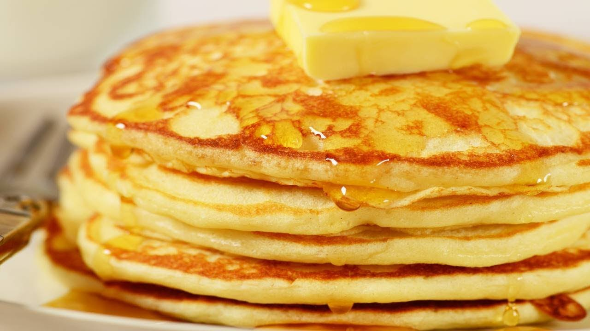

Home
Easy Pancakes

Description
A pancake is a flat cake, often thin and round, prepared from a starch-based batter that may contain eggs, milk and butter and cooked on a hot surface such as a griddle or frying pan, often frying with oil or butter.
This recipe doesn't require much thought early in the morning, and tastes great!
INGREDIENTS
- 1 cup all-purpose flour
- 2 tablespoons white sugar
- 2 teaspoons baking powder
- 1 teaspoon salt
- 1 egg, beatenr
- 1 cup milk
- 2 tablespoons vegetable oil
DIRECTIONS
-
In a large bowl, mix flour, sugar, baking powder and salt.
Make a well in the center, and pour in milk, egg and oil. Mix until smooth.
-
Heat a lightly oiled griddle or frying pan over medium high heat.
Pour or scoop the batter onto the griddle, using approximately 1/4 cup for each pancake. Brown on both sides and serve hot.